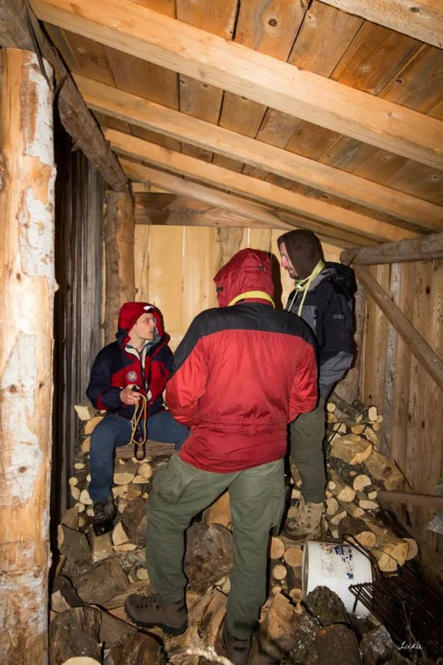

Rokina bezdana - ispit speleološke škole 2015.
Vremenska prognoza je obećavala dobru priču završnog izleta na Rokinu bezdanu i ispita za speleološke pripravnike 45. Velebitaške speleoškole. U kratkim crtama sažela bi se u samo dvije riječi – kišno i hladno. O nekom…

Tekst i fotografije: Marjan Prpić – Luka
Vremenska prognoza je obećavala dobru priču završnog izleta na Rokinu bezdanu i ispita za speleološke pripravnike 45. Velebitaške speleoškole. U kratkim crtama sažela bi se u samo dvije riječi – kišno i hladno. O nekom otkazivanju nije bilo ni primisli, barem ne kod voditelja škole i instruktora mu.
Dio nas u Jezerane pred jamu došao je već u petak, napravili se bivaci, postavila jama i još malo uživali u toplim trenucima južine. Kišurina je počela padati u subotu negdje od 7 sati ujutro i izmjenjivala se sa snijegom skoro do 18 sati popodne. Srećom pa nas u tom kraju vole te su nam nakon kratkih telefonskih poziva na ličko-rođačkoj vezi, članovi Lovačkog društva iz Jezerana ustupili svoj dom za održavanje ispita na suhom, a dijelom i toplom mjestu (malena drvena kućica sa kuhinjom i oogromnim mjestom za pečenje – red veličine od patke do vola. Neki su to veliko ložište iskoristili za sasvim fino i ugodno sjedenje kao u pravom dnevnom boravku, osim što su sjedili doslovce u dimnjaku.
[caption id="attachment_691" align="alignleft" width="200"] Tko nije bio brz ulovio je drvarnicu...[/caption]
Ako su školarci mislili da će svi uhvatiti slična mjesta, prevarili su se. Ispitivači kao ispitivači, svatko voli biti na miru, pa su neki pronašli i druga mjesta za svoje pulene – poput drvarnice ili jasli za kukuruze. Da im dan neće proći samo tako lagano, shvatili su polaznici škole nakon tri i pol sata usmenog ispitivanja.
Za to vrijeme iskoristila se prigoda i pripremio kotao sa grahom, a kada su svi budući pripravnici položili usmeni dio i odahnuli, neumoljivi vođa škole Marin reče – “OK, ajmo svi van na jamu!”
[caption id="attachment_692" align="alignright" width="189"] Dok je stvarno sporima ostalo spremište kuruze[/caption]
I svi bez pogovora odoše. Nedugo zatim ispred Rokine pokisla družba počela je raditi bivake, rastezati tendu za sklonište, vatru i neizostavni tulum.. Grah se završavao također pod kišom, a sa njenim slabljenjem, prva grupa krenula je prema jami.
Nažalost, taj dan nije bio dan za spuštanje niz stometarsku vertikalu jer se na prvom zubu i dalje cijedio pravi slap te je donešena odluka da se ne riskira sa silaskom.
Vrući grah bio je pravi melem na ranu svima nama smrznutima, a onda je krenuo zabavniji dio – gitara, ukulele i 'Patka' (čudo od instrumenta kojeg je donijela Luana) te zborno pjevanje (najbolje na ovoj školi) koje je odjekivalo kapelskim obroncima dugo u noć. Izvedbu „O Vaheline“ ne treba posebno ni naglašavati.
Jutro je donijelo snijeg na vrhovima Kapele i okolnim brdima, zaleđene automobile, ali i sunce. A sunce je ugrijalo i voditelja škole kada je vidio iznenađenje koje su mu pripremili školarci – od kamenja složen veliki broj 45 (u čast 45. velebitaškoj školi), ali i u zahvalnost
[caption id="attachment_701" align="alignright" width="300"] Bračni par u novom nasadu Aronije[/caption]
Marinu kao dobrom voditelju – oko broja 45 zasađena su stabalca aronije. Nadamo se da će ta stabalca doživjeti prvu berbu.
I onda je krenuo glavni događaj. Instruktori se rasporedili u vertikali, a školarci na svoj prvi pravi ispit – niz 100 metarsku vertikalu. Buka vode koja se čula sa dna vjerojatno je svakome malo dala trnaca i strahopoštovanja, ali osmijesi od uha do uha na izlasku bili su najbolji izraz doživljaja. Mokri, umorni, malo izbijeni iz cipela, ali sretni. Napravili su svoj veliki i pravi speleološki korak. I zaslužili zvanje pripravnika za speleologa.
Kada je i zadnji čovjek izašao iz jame, Luka i Marin održali su prezentaciju samospašavanja, a školarci su se u sebi ili među sobom na glas pitali zbog čega sa strane stoji i ta namotana špaga (sada već svi stručno raspoznaju da je riječ o dinamiku).
[caption id="attachment_682" align="alignleft" width="300"] ...slijedi Krštenje![/caption]
Ubrzo je postalo jasno da se pripravnik ne postaje bez krštenja istim dinamikom - po dupetu. I to od instruktora koji su bili na svim izletima ove speleoškole. Srećom po školarce i njihove zadnjice pa je Marin taj broj sveo na tri. U prijevodu – tri puta po školarcu pripravniku.
Taj dio vam prepuštamo mašti. Ali da su svi čestito kršteni kao pripravnici – znajte da jesu.
Predvečer je brzo došlo, počistili smo teren, spremili stvari i otišli u obližnju birtiju - Volan na pivu. Tamo se zahvalili lovcima na gostoprimstvu i onda put pod „gume na kotačima“ – prema Zagrebu. Neki udobno smješteni u sjedala, a neki vjerojatno namještajući na najmanje bolno mjesto. Ali nakon iskustva na Rokinoj bezdani – vjerujemo da nema speleološkog pripravnika 45. zagrebačke speleoškole SO Velebit koji nije u sebi rekao – vrijedilo je.
[gallery type="rectangular" ids="684,694,693,691,692,679,690,681,680,678,689,697,695,683,696,700,699,688,687,686,685,698,677,682,701"]